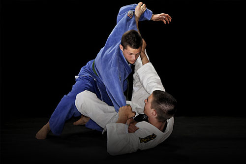

| Tristan Cendan |
|---|
| Mon parcours |
|---|
|
Mon parcours scolaire :
|
| Mes matières préférées |
|---|
|
Mes matières favorites sont les Mathématiques et la NSI |
| Mes passions | ||
|---|---|---|
| Football | Programmation | Jiu-jitsu |
|
Vous pouvez retrouver ici mon explication en profondeur de mon sport favori, le football! |
"La programmation est l'ensemble des activités qui permettent l'écriture des programmes informatiques."- WikiPédia |
 |